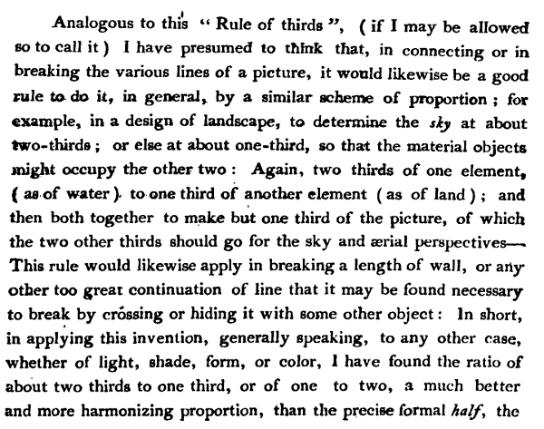
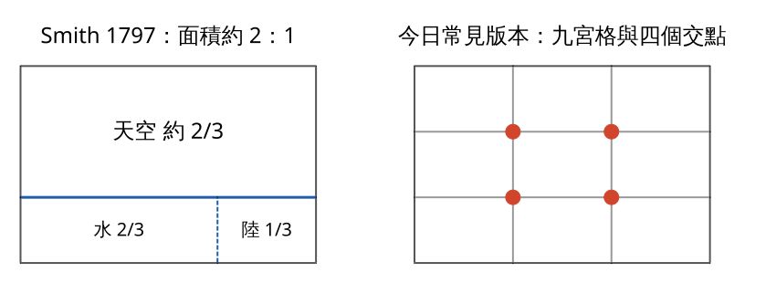
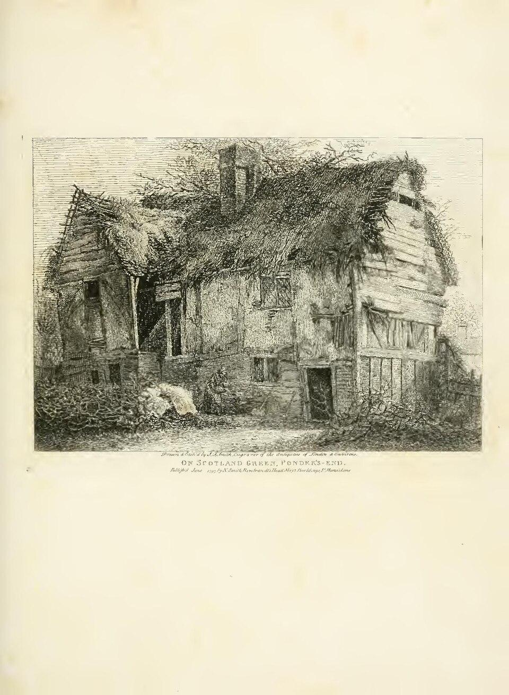
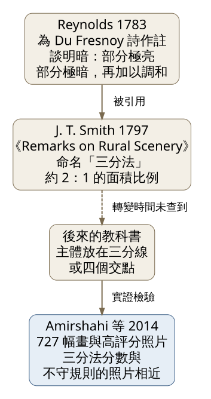

「三分法」這個名稱第一次出現在 1797 年一本談鄉村小屋的蝕刻畫冊裡，當時說的是「約二比一的面積比例」，和今天相機螢幕上的九宮格交叉點並不是同一件事；它也從來沒有被證實能讓畫面更好看。
【史料】1797 年，倫敦一位三十一歲的版畫家 John Thomas Smith 出版了《Remarks on Rural Scenery》，書裡有二十幅他親手蝕刻的鄉村小屋，外加一段關於「如畫」（picturesque）風景該怎麼畫的心得。Smith 生於 1766 年，以畫倫敦舊建築、收集古物聞名，綽號「Antiquity Smith」。1816 年 9 月，他被任命為大英博物館版畫與素描部的主管，一直做到 1833 年過世。（依《Dictionary of National Biography》第 53 卷 Robert Edmund Graves 撰寫的條目，1898 年）
【史料】這本書的第 15 到 17 頁有一節叫〈Of Light and Shade〉（論明暗）。Smith 先說了一個觀察：他看 Rembrandt 等大師的畫，發現主要的光常常放在畫面中間附近，而畫面有三分之二以上落在陰影裡；他舉的例子是當時 Knight 先生收藏的一幅 Rembrandt，畫名叫〈The Cradle〉。接著他引用 Reynolds 的話：畫裡要有一部分盡可能亮、一部分盡可能暗，再把兩端調和起來。（見圖 1）

圖 1｜《Remarks on Rural Scenery》中首次寫下 “Rule of thirds” 的段落。來源：John Thomas Smith，Remarks on Rural Scenery，1797。授權：Public domain，來源頁面
就在這段之後，Smith 寫下一句後來被反覆引用的話。他說，類比於這條 “Rule of thirds”，他斗膽這樣稱呼它，畫面上的線條在哪裡相接、在哪裡斷開，也可以照同樣的比例來安排。這是目前查得到最早寫成文字的「三分法」。這段話的語氣很客氣，段末他還加了一句：如果有哪位紳士對這點有意見，他會很樂意聽。
【經典理論】Smith 在 1797 年主張的三分法，內容可以拆成三點（依 archive.org 所藏原書第 15–17 頁）：
一、它是面積比例。畫風景時，天空約佔三分之二，或者只佔三分之一，讓地上的東西佔另外兩份。水與陸也一樣：水佔三分之二、陸佔三分之一，兩者合起來再只佔整張畫的三分之一，其餘留給天空與遠景。（見圖 2 左）
二、它不只管構圖。Smith 說這個比例可以用在光、影、形與色，也可以用在「打斷」一段太長的牆或線條：在約三分之一處用別的東西擋住或穿過它。
三、它是跟其他比例比較出來的。他說二比一比 “the precise formal half”（剛好一半）好，也比拉得太遠的五分之四好。他沒有提出理由，只說這是他自己試過的心得。

圖 2｜左：Smith 描述的比例，天空約佔 2/3，下方 1/3 再分成水 2/3、陸 1/3；右：今日教科書常見的九宮格，主體放在三分線或四個交點。示意圖，非實測。來源：本課程依 John Thomas Smith《Remarks on Rural Scenery》（1797）第 16–17 頁與 Amirshahi 等（2014）對現代版本的描述繪製。
今天我們在手機相機裡打開的格線，是另一種東西（見圖 2 右）。Amirshahi、Hayn-Leichsenring、Denzler 與 Redies 在 2014 年的論文開頭整理了現代的說法：把畫面用兩條橫線、兩條直線切成九等分，主體放在其中一條線上，或放在四個交點之一。這個版本講的是「點的位置」，Smith 講的是「面積怎麼分」。從 Smith 的比例演變成九宮格交點，中間經過哪些書、在哪一年定型，本課沒有查到可靠的文獻，所以不寫。
【實證研究】那麼九宮格版本有沒有效？Amirshahi 等人（2014，《Art & Perception》第 2 卷，163–182 頁）用電腦計算每張圖的「顯著區」（最容易吸引目光的區域）落在交點附近的程度，再請 30 位受試者判斷照片是否遵守三分法、並評分美感。結果是：受試者覺得「有沒有遵守三分法」和美感分數只有微弱相關；高評分的照片，以及 727 幅來自博物館典藏的畫作，算出來的三分法分數，和不遵守三分法的對照照片差不多低。作者的結論是，三分法在大量高品質影像中只扮演 “only a minor, if any, role”。他們也提醒，這是以顯著區演算法為基礎的測量，畫作部分沒有另外請人評分。
最好的分析對象就是 Smith 自己的畫。《Remarks on Rural Scenery》裡有一幅〈On Scotland Green, Ponder's End〉，畫的是倫敦北郊 Ponders End 一棟破舊的木造茅草屋（見圖 3）。下面是本課對這幅版畫的觀察，不是 Smith 本人的說明；你可以拿尺在螢幕上自己量一次。

圖 3｜〈On Scotland Green, Ponder's End〉，《Remarks on Rural Scenery》書中蝕刻插圖（掃描本第 35 頁）。來源：John Thomas Smith，Remarks on Rural Scenery，1797。授權：Public domain，來源頁面
天空與房子。這幅畫幾乎沒有「天空」。屋頂、煙囪和背後的樹枝把畫面上緣塞得很滿，只在左右兩側留下一些空白。房屋、矮牆、灌木和泥地佔去了大部分的面積。對照 Smith 的文字，這比較接近他說的第二種選項：天空只佔約三分之一或更少，讓「實在的東西」佔其餘兩份。
不在正中間的分界。房子的右側山牆和左側斜屋頂形成兩個突出的量體，中間是較低的主屋。畫面沒有被一條垂直線從正中切開，地面那條小路也從左下往右斜斜穿過。Smith 反對「剛好一半」，在這幅畫裡你找不到一條把畫面對分的線。
光放在哪裡。整幅畫最亮的一塊，是房子前方地上一團白色的東西，像是晾著的布或一捆稻草，位置在畫面下半部、偏左一些；屋頂與灌木則是大片的深色排線。這和 Smith 在同一節寫的兩件事對得上：兩塊同樣大、同樣亮的光不應同時出現，一個主光、其他從屬；畫面裡最亮和最暗的部分要並存。它並沒有被放在九宮格的交點上，也沒必要放，因為 Smith 的規則裡沒有交點。
拿這幅畫去套現代的九宮格，你會發現很難說它「有遵守」或「沒遵守」。這正好說明兩種三分法在問不同的問題：Smith 問的是「天、地、光、暗各佔多少」，九宮格問的是「主角站在哪一點」。
【經典理論】Darren R. Reid 與 Brett Sanders 的《Documentary Making for Digital Humanists》（Open Book Publishers，2021）第 10 章談構圖時，先肯定三分法是重要規則，但隨即說好的畫面不只靠這一條，還要看頭頂空間（headroom）與視線前方的空間（looking room）。
有趣的是，這一章談頭頂空間時用到的「三分之一」，比較接近 Smith 的用法。作者說，頭頂空白太少，人像被框頂住；如果頭頂留白超過畫面的三分之一，人物又會顯得迷失在環境裡。這是在講「一塊空白佔多少面積」，而不是「眼睛放在哪個交點」。拍訪談時，可以同時用兩種三分法檢查同一個畫面：主角落在九宮格的哪裡，頭頂的空白有沒有超過三分之一。作者也寫明，這些規則都有該被打破的時候，懂得規則能幫你打破得更有效。
誤解一：三分法是自古以來大師共用的法則。目前查得到最早寫下這個名稱的是 1797 年的 Smith，而且他自己只說「如果允許我這樣稱呼」，還邀請別人指正。他在同一節說 Rembrandt 的主光常放在畫面中間附近，跟「別把主體放中間」的現代口訣剛好相反。
誤解二：三分法就是九宮格的四個交點。Smith 的原文沒有格線，也沒有交點，講的是面積的二比一，而且用在光影、形狀、色彩與線條的斷點上。（見圖 4）

圖 4｜三分法的來歷：從 Reynolds 的明暗註解、Smith 的命名，到現代九宮格版本與 2014 年的實證檢驗；虛線表示中間的轉變本課未查到可靠文獻。來源：本課程依 Smith（1797）、Mason 譯 Du Fresnoy《The Art of Painting》附 Reynolds 註（1783）與 Amirshahi 等（2014）繪製。
誤解三：三分法已被證實讓照片更好看。Amirshahi 等人（2014）的資料指向相反方向：高評分的照片和博物館畫作，並沒有特別遵守三分法。作者推測，三分法也許能幫初學者有意識地替畫面建立結構，熟練之後就不再需要；他們明白寫這是推測。另外，這只是一篇研究，用的是演算法估計的顯著區，結論不能推到所有影像。
誤解四：三分法和黃金比例差不多。三分之一與三分之二是 0.333 和 0.667，黃金分割則約是 0.382 和 0.618，兩者是不同的數字。第 016 堂談過黃金比例常被誇大，Amirshahi 等人也把兩者並列，認為它們都反映了藝術家想把構圖變成規則的願望。
看（5 分鐘）：站在窗邊或騎樓下，看一個有天空、有地面的景。不拍照，先用手指在空中比劃：天空佔了畫面幾成？地面上的建築和路面又各佔幾成？再找出眼前最亮的一塊和最暗的一塊，看它們各在哪裡。
做（10 分鐘）：用手機對同一個景連拍五張，鏡頭位置不變，只上下或左右移動取景。
1. 地平線（或建築與天空的交界）放在正中間。
2. 交界放在下方三分之一：天空約佔三分之二（Smith 的第一種選項）。
3. 交界放在上方三分之一：天空只佔三分之一（Smith 的第二種選項）。
4. 打開相機格線，把一個主角（一盞路燈、一棵樹、一個招牌）放在任一交點上。
5. 把同一個主角放在畫面正中央。
拍完後，在紙上把五張照片按自己的喜好排序，寫下第一名和最後一名的理由各一句。
回顧（5 分鐘）：
1. 第 2、3 張和第 1 張比，你覺得「剛好一半」真的比較呆板嗎？還是要看景物本身？
2. 第 4、5 張中，主角放在中央的那張，有沒有哪裡反而比較好？想想 Smith 說 Rembrandt 的主光常在中間附近。
3. 你的五張照片裡，最亮的那一塊落在哪裡？它跟你喜歡哪一張有沒有關係？
來源 | 類型 | 查核日期 |
John Thomas Smith，《Remarks on Rural Scenery》，London，1797（全文掃描，第 15–17 頁〈Of Light and Shade〉）：archive.org | 史料／經典理論 | 2026-11-14 |
The Met 典藏紀錄：Remarks on Rural Scenery（1797，Nathaniel Smith 出版）：metmuseum.org | 史料 | 2026-11-14 |
Robert Edmund Graves，“Smith, John Thomas (1766–1833)”，《Dictionary of National Biography》第 53 卷，1898：Wikisource | 史料 | 2026-11-14 |
Du Fresnoy，《The Art of Painting》，William Mason 譯，附 Sir Joshua Reynolds 註，York／London，1783（書目資料）：Jackson Bibliography；Reynolds 註文內容依 Smith 1797 書中引文（二手） | 史料 | 2026-11-14 |
Amirshahi, S. A., Hayn-Leichsenring, G. U., Denzler, J., & Redies, C.（2014）. Evaluating the Rule of Thirds in Photographs and Paintings. Art & Perception, 2, 163–182. DOI；作者提供全文 PDF | 實證研究 | 2026-11-14 |
Darren R. Reid & Brett Sanders，《Documentary Making for Digital Humanists》，Open Book Publishers，2021，第 10 章〈Composing a Shot — Tips and Techniques〉：openbookpublishers.com | 經典理論（實務教科書） | 2026-11-14 |
圖 1 授權頁：File:Rule of thirds 1797 John Thomas Smith rule of thirds.png：Wikimedia Commons | 圖片授權（Public domain） | 2026-11-14 |
圖 3 授權頁：Remarks on rural scenery（IA remarksonruralsc00smit）.pdf：Wikimedia Commons | 圖片授權（Public domain） | 2026-11-14 |